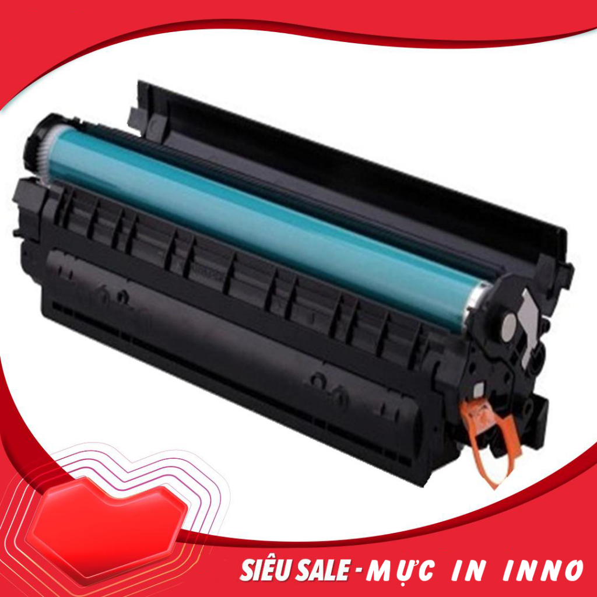

Hộp mực Zin – KHUYẾN MÃI LỚN
XẢ KHO ĂN TẾT 1000 HỘP MỰCĐỒNG GIÁ 230K
== > Áp dụng từ nay đến hết 20/1/2020
HỘP MỰC ZIN - BẢO HÀNH 12 THÁNG 3 LẦN NẠP MỰC
XÀI THẢ GA - KHÔNG LO VỀ GIÁ

– BẢO HÀNH DÀI HẠN
– PHỤC VỤ TẬN NƠI
– CÓ MẶT NHANH CHÓNG
– DỊCH VỤ 24/7
>> LH: 0908 327123 <<
CHỈ VỚI 499K
CÓ NGAY HỘP MỰC HÀNG ZIN LINH KIỆN BẢO HÀNH 1 NĂM - 3 LẦN NẠP MỰC
Bạn không còn lo lắng vì nỗi ám ảnh: Nạp Mực – Thay Drum, Nạp Mực – Thay Từ, Nạp Mực – Thay Sạc, Nạp Mực – Thay Gạt.. Nạp mực thay..
Mỗi lần nạp mực, mỗi lần thay linh kiện đó là điều không tránh khỏi khi bạn cứ mua hộp mực giá rẻ, mua online, mua không có nguồn gốc rõ ràng, linh kiện không đảm bảo làm đội chi phí mỗi lần bơm mực máy in.
Có điều gì mới: Chúng tôi sử dụng Mực in Nano cho hộp mực Zin, hạt mực mịn, nhỏ, ít từ cho bản in sắc nét, đậm và đặc biệt chống hao mòn linh kiện chỉ sử dụng nạp mực máy in duy nhất cho hộp mực được bảo hành.
Hãy để Trường Phát đồng hành cùng bạn! Từ nay khi thay mực bạn không tốn thêm bất kỳ một khoảng chi phí nào ngoài tiền mực khi mua hộp mực Zin của chúng tôi
GỌI NGAY: 0908 327 123
Cần nạp mực hoặc sửa máy in tận nơi? Mực In Trường Phát có mặt trong 30 phút tại TP.HCM — in test trước khi tính tiền, bảo hành 1 tháng.
0908.327.123 · 0819.007.394 (Zalo cả 2 số)